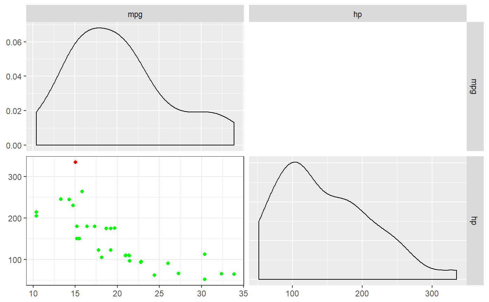

This function combines a number of criteria for determining whether a datapoint is an influential case in a regression analysis. It then sum the criteria to compute an index of influentiality. A list of cases with an index of influentiality of 1 or more is then displayed, after which the regression analysis is repeated without those influantial cases. A scattermatrix is also displayed, showing the density curves of each variable, and in the scattermatrix, points that are colored depending on how influential each case is.
regrInfluential(formula, data)
| formula | The formule of the regression analysis. |
|---|---|
| data | The data to use for the analysis. |
A regrInfluential object, which, if printed, shows the influential cases, the regression analyses repeated without those cases, and the scatter matrix.
regrInfluential(mpg ~ hp, mtcars);#> mpg hp dfb.1_ dfb.hp dffit cov.r cook.d hat #> Maserati Bora 15 335 -1.128627 1.487575 1.580208 0.9791369 1.052231 0.2745929 #> indexOfInfluentiality #> Maserati Bora 5#> #> Regression analyses, repeated without influential cases: #> #> -- Omitting all cases marked as influential by 5 criteria: #> #> Regression analysis for formula: mpg ~ hp #> #> Significance test of the entire model (all predictors together): #> Multiple R-squared: [0.41, 0.79] (point estimate = 0.6, adjusted = 0.59) #> Test for significance: F[1, 30] = 45.46, p < .001 #> #> Raw regression coefficients (unstandardized beta values, called 'B' in SPSS): #> #> 95% conf. int. estimate se t p #> (Intercept) [26.76; 33.44] 30.10 1.63 18.42 <.001 #> hp [-0.09; -0.05] -0.07 0.01 -6.74 <.001 #> #> Scaled regression coefficients (standardized beta values, called 'Beta' in SPSS): #> #> 95% conf. int. estimate se t p #> (Intercept) [-0.23; 0.23] 0.00 0.11 0.00 1 #> hp [-1.01; -0.54] -0.78 0.12 -6.74 <.001